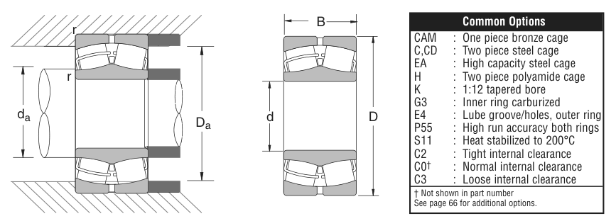

Original catalogue drawing - NSK catalogue, page 93

Scanned from the manufacturer catalogue page listing this part number. All part numbers printed on that table share the same drawing.
Scale cross-section
Blue = inner / outer ring, yellow = rolling element. Drawn to scale from this part's own
dimensions for selection reference only - not a manufacturing or assembly drawing.
Dimension table (mm / inch)
Symbol
Dimension
mm
inch
d
Bore diameter
1000
39.3701
D
Outside diameter
1420
55.9055
B
Inner-ring / bearing width
412
16.2205
Notes
Weights are given in kg. Load ratings are shown in both the original catalogue units and the converted value (1 N = 0.2248 lbf). Data is provided for selection reference only - confirm against the latest official catalogue before ordering.
Main dimensions
Bore d (mm)
1000
Bore d (in)
39.3701
Outside dia. D (mm)
1420
Outside dia. D (in)
55.9055
Width B (mm)
412
Width B (in)
16.2205
Load ratings & speeds
Basic dynamic load rating Cr (lbs)
3450000
Basic static load rating Cor (lbs)
8700000
Limiting speed - grease (rpm)
110
Limiting speed - oil (rpm)
150
Weight
Weight (kg)
2005.332
Mounting dimensions (fillets / shoulders)
Chamfer r (in)
0.236
Shaft shoulder da min (in)
40.79
Shaft shoulder da max (in)
42.84
Housing shoulder Da min (in)
50.19
Housing shoulder Da max (in)
54.49
Bearing life (ISO 281 basic rating life)
C / P
Equivalent load P (N)
L10 (106 rev)
L10h at 100 rpm
4
3,836,591
102
16,932
6
2,557,727
392
65,416
8
1,918,296
1,024
170,667
10
1,534,636
2,154
359,072
15
1,023,091
8,323
1,387,244
Basic rating life per ISO 281: L10 = (C/P)10/3 with C = 15,346,365 N. Hours = L10 x 106 / (60n). Life-modification factors for lubrication, contamination and temperature (aISO) are not included.
Source & traceability
Brand
NSK
Source catalogue
NSK inch product catalogue
Catalogue page
p.95 (dimensions) / p.96 (ratings)
Dimensions in inches and millimetres, load ratings in lbs.
Send us the quantity you need and we will come back with price and
lead time, normally within 24 hours. Equivalent parts from other brands can be quoted at the same time.